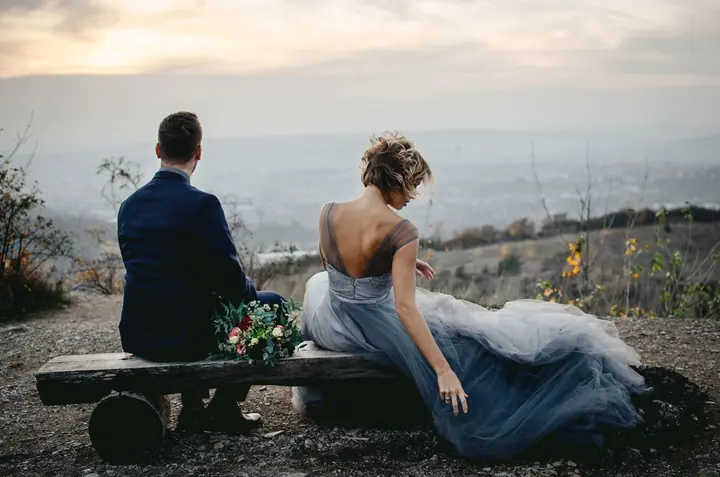

jedna
Svatební reportáž
Svatbu fotím hlavně jako reportáž a soustředím se na momentky, atmosféru a detaily. Pravidla a strnulost omezíme na minimum, protože svatba je oslava, ne divadelní představení.

Svatební fotografka a portrétistka · Brno, Vysočina

Jmenuji se Sofia Krčmář Sämann a jsem svatební fotografka z Brna. Svatbu fotím hlavně jako reportáž, plnou momentek, atmosféry a detailů, a vždycky si ráda najdu čas i na vaše společné portréty.
Více o mně
Co fotím
jedna
Svatbu fotím hlavně jako reportáž a soustředím se na momentky, atmosféru a detaily. Pravidla a strnulost omezíme na minimum, protože svatba je oslava, ne divadelní představení.
dvě
Portréty mě moc baví. Pokud si to přejete, věnuji párovému focení i víc času než jiní fotografové.
tři
Kromě spontánních momentů fotím i stylizované portréty. Snažím se do nich vnést svůj rukopis a atmosféru, která ve vás vzbudí emoce.
Fotím také editoriály a kolekce pro návrháře a značky, například pro Verchia Design nebo To.Get.Her.

Emoce a radost jsou na svatbách to nejlepší.

Za objektivem
Všechno začalo před 15 lety. Fotila jsem na analog v Alpách, na zahradě u známé, květiny. Ty fotky jsem nechala zarámovat a dodnes visí na zdi v pracovně mého táty. Tím začala moje fotografická cesta plná sebekritiky a učení a doufám, že nikdy neskončí. Zatím jsem ani jednou neměla pocit vyhoření.
Bydlím v Brně, ale čím dál víc miluji přírodu. Fascinují mě jehličnaté lesy, ztracená magická místa, staré domy a věci. Jsem velký nostalgik a podle mého manžela prý i sociální upír, a možná proto si svatby tolik užívám. Ráda si popovídám s hosty a připiju s nimi na novomanžele.
Do fotek se snažím dostat trochu zábavy, autentičnost i nostalgii. Chci, abyste se u nich dojali, zasmáli a zavzpomínali. Sama už mám svou svatbu za sebou, takže vám můžu leccos poradit nebo někoho doporučit.
Sofia
Napište mi nebo zavolejte a povězte mi o svém dni. Kde, s kým a jak ho chcete oslavit.
Sama mám svatbu za sebou, takže vám ráda poradím a doporučím šikovné lidi. Den si zařídíte po svém, je to přece váš den.
Fotím hlavně reportážně: momentky, atmosféru a detaily. Mám ráda spontánnost, lehkost a nezvyklé situace.
Fotkami chci vyprávět váš příběh, aby ve vás vzbudily emoce a abyste se k nim rádi vraceli.
Portfolio
Fotografie jsou ilustrační
Otázky
Svatba je pro mě hlavně reportáž. Zaměřuji se na momentky, atmosféru a detaily a strnulé pózování omezuji na minimum.
Určitě. Portréty si moc užívám, a když si to přejete, věnuji párovému focení i víc času než jiní fotografové.
Ráda. Svou svatbu už mám za sebou, takže vám můžu leccos poradit nebo doporučit.
Bydlím v Brně a svatby jsem fotila v Brně i na Vysočině. Nejvíc mě lákají místa, která jsou vám blízká, a příroda.

Napište pár vět o tom, co si představujete. · +420 739 267 057